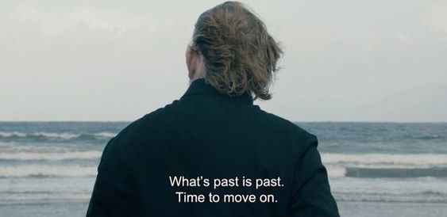

Bagian 1
Aku tidak pernah memprediksi bagaimana kisahku sebelumnya berakhir, dan bagaimana aku akan menyikapi kehidupanku setelahnya. Bulan Juni pun datang, aku membuka lembar baru dengan terpontang-panting tidak ada arah, setiap hari mencoba mengurangi intentitas keberadaanku di sini. Aku menghapus berbagai kegiatan dan ikatan yang ada di sini, dengan harapan setelahnya akan bergegas untuk pergi.
Next